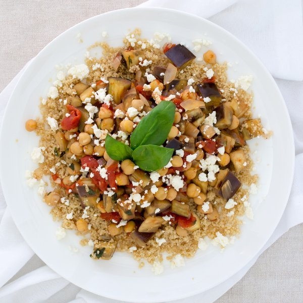

Eggplant, Tomato & Chickpea Stew with Couscous & Feta

Prep Time
40 min
Nutrition (per serving)
612.9 kcalCalories
27.5 gProtein
93.7 gCarbs
19 gFat
Full nutrition table
| Calories | 612.9 kcal |
| Total fat | 19 g |
| Saturated fat | 6 g |
| Trans fat | 0.4 g |
| Cholesterol | 25.1 mg |
| Sodium | 618.5 mg |
| Carbohydrates | 93.7 g |
| Fiber | 27.9 g |
| Sugars | 15.2 g |
| Protein | 27.5 g |
| Potassium | 1597.4 mg |
| Calcium | 336.4 mg |
| Iron | 5.3 mg |
| Vitamin A | 1127.4 IU |
| Vitamin C | 36.6 mg |
| Vitamin D | 4.5 IU |
Cookware
Ingredients
- 24 fl ozchicken or vegetable broth
- 1 (4 oz) pkgcrumbled feta cheese
- 2 (14.5 oz) cansdiced tomatoes
- 2eggplants
- 1 small pkgfresh basil
- 2 (15 oz) cansgarbanzo beans (chickpeas)
- 4 clovesgarlic
- 1 cupwhole wheat couscous
- 1 mediumyellow onion
- black pepper
- cumin, ground
- curry powder
- extra virgin olive oil
- salt
Steps
- Wash and dry the fresh produce.2 eggplants
1 small pkg fresh basil - Trim and discard the ends of the eggplants; medium dice the eggplants (cut into ½-inch cubes) and transfer to a medium bowl.
- Preheat a sauté pan over medium heat.
- Peel and small dice the onion (cut into ¼-inch cubes).1 medium yellow onion
- Add olive oil to the pan and swirl to coat the bottom.1 tbsp extra virgin olive oil
- Add the onion to the pan; cook, stirring frequently, until softened, 3 to 5 minutes.
- Peel and mince (or crush) the garlic.4 cloves garlic
- Add broth to a small saucepan and bring to a boil.16 fl oz (2 cups) chicken or vegetable broth
- Add the garlic to the pan; stir until fragrant, 15 to 30 seconds.
- Add the eggplant, diced tomatoes, and broth to the pan; season with cumin, salt, pepper, and curry powder. Bring to a boil, then reduce the heat to medium-low; cook, stirring occasionally, until the eggplant is tender, 8 to 10 minutes.2 (14.5 oz) cans diced tomatoes
8 fl oz (1 cup) chicken or vegetable broth
1 tsp cumin
1 tsp salt
1 tsp black pepper
½ tsp curry powder - Once the water is boiling, remove the saucepan from the heat. Add salt and couscous and stir. Cover the saucepan and let it sit for 10 minutes.½ tsp salt
1 cup whole wheat couscous - While the eggplant cooks, drain and rinse the chickpeas in a colander.2 (15 oz) cans garbanzo beans (chickpeas)
- Place the feta in a small bowl.1 (4 oz) pkg crumbled feta cheese
- Pick the basil leaves off the stems; discard the stems and chop almost all of the leaves (save a few for garnishing).
- Stir the chickpeas and chopped basil into the pan; cook for another 2 to 3 minutes.
- Uncover the couscous and fluff with a fork.
- To serve, spoon the couscous onto a plate, top with the stew, and garnish with the feta and remaining basil leaves. Enjoy!